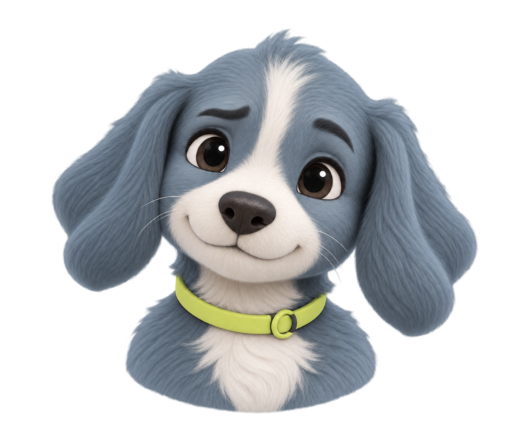
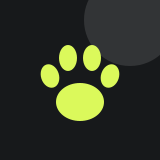
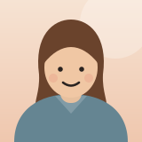
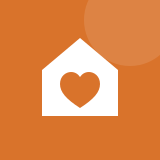
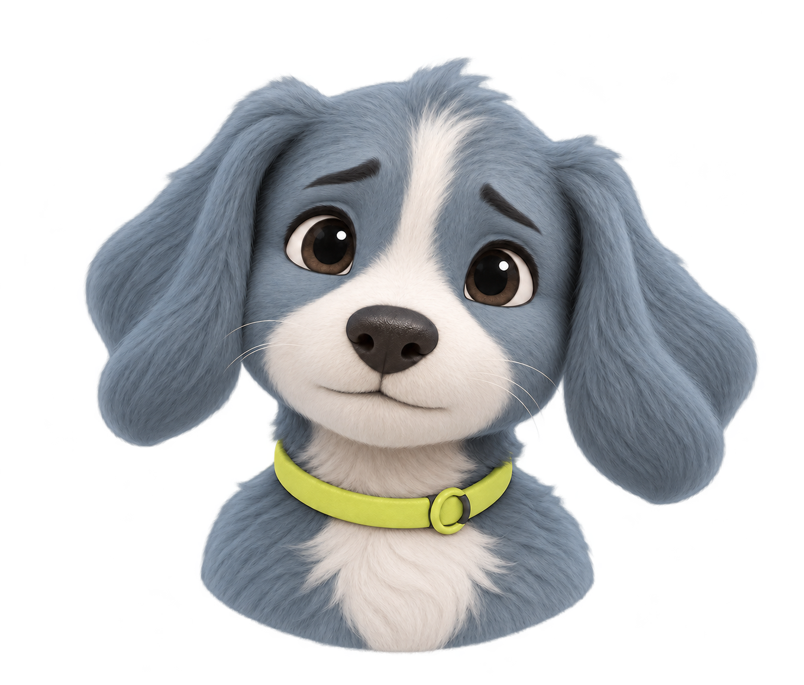
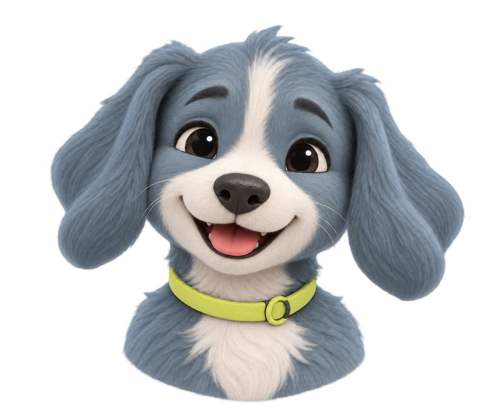

Начнём с безопасности. Вы сейчас можете наблюдать за животным с безопасного расстояния?
Спокойная помощь
в стрессовый момент
Система собрана из кода прототипа «Подхват». Каждое значение ниже — то, что реально отрисовывается в приложении; компоненты на этой странице подключают тот же podhvat.css, что и прототип.
Один шаг за раз
Экран показывает следующее действие, а не весь маршрут. Главная кнопка одна и всегда лаймовая.
Стекло только в управлении
Навигация, шапка и поле ввода — полупрозрачные. Содержимое — непрозрачные карточки.
Не обещаем лишнего
Запрос, задача, приём и согласие на контакты — разные состояния. Ответ организации не равен приёму животного.
Две темы, два языка
Светлая и тёмная темы, RU и EN. «Меньше движения», «Меньше прозрачности», «Больше контраста» — в настройках.
Цвет
Ink, paper, white и лайм — основа. Воздушный сине-серый используется на главной и в фоне случая. Статусные цвета всегда сопровождаются иконкой и текстом.
Поверхности и текст — переключаются темой
Основа бренда
Статусы
Контраст основных пар
| Пара | Текущая тема | Контраст | WCAG AA |
|---|
Типографика
Системный шрифт iOS (SF Pro), на других платформах — Segoe UI и Arial. Веса: 400 для крупных заголовков, 500–600 для действий и подзаголовков.
В прототипе встречалось около десяти размеров. Шкала выше — рабочая: новые экраны берут значения только из неё; близкие значения (13, 15 px) постепенно приводятся к 14 и 16.
Геометрия
Все поля и интервалы проверяются по фактическим границам элементов, а не по декларациям CSS.
Поля и интервалы
| Токен | px | Где применяется |
|---|---|---|
--page-inset | 10 | Внешние поля страницы, плавающие панели |
--control-inset | 10 | Кнопки и круглые элементы от внутреннего края плашки |
--surface-inset | 18 | Текст внутри карточек |
--section-gap | 12 | Интервал между карточками и кнопками |
| Страница на ширине | 320–430 | Мобильная рамка 390 на десктопе |
Высоты
56
главное
главное
54
кнопка · круг
кнопка · круг
44
компактное
компактное
40
тег
тег
24
иконка
иконка
Радиусы
pill
круг
28
карточка
карточка
24
поле
поле
22
фото в карточке
фото в карточке
20
плитка
плитка
16
значок
значок
Фото внутри карточки (22) = радиус карточки (28) минус поле 6 — вложенные углы остаются концентричными.
Компоненты
Живые образцы. Переключатели темы и движения вверху страницы действуют на все из них.
Кнопки
Высота: 54 по умолчанию, 56 для главного действия на экране. Нажатие — масштаб .92 за 120 мс, иконка не деформируется.
Теги и статусы
ИдётНужно вниманиеСрочноЛаймЗакрытНейтральный
Поля формы
Карточки и уведомления
Рыжий пёс
ИдётГородской парк · #0241
Следующий шаг · 3 / 5
Найти помощника
Согласие относится только к этому случаю и этому собеседнику. Его можно отозвать.
Маршрут
✓
Оценить
Данные сохранены3
Найти помощь
Текущий этап4
Согласовать
ВпередиСообщения Скаута
Нижняя навигация
Четыре раздела: Главная, Рядом, Случай, Связь. Профиль — через шапку. Подсветка вкладки определяется по экрану: оценка, план заботы и история относятся к «Случаю».
v14 · Карточка случая, миниатюры и мини-кнопки
Рыжий пёс
Сегодня · #0241
Карточка: радиус 32, внутренний отступ 10. «Колодец» с фото 28, фото растворяется вниз градиентом. Миниатюры 58 px. Мини-кнопка: круг 56 (радиус 28), подпись 12 px снизу, на ≤350 px — 11 px.
v14 · Сегмент, чипы, поля без обводки
ВидОкрасГабаритыРайонФото учтено
Поле — заливка --field-fill, без рамки. Фокус: кольцо 3 px и линия 1,5 px (синяя в светлой теме, лайм в тёмной). Ошибка — красная внутренняя линия.
v14 · Шкала срочности и статус ответа
НаблюдениеВниманиеСрочно
Ответ помощи
2 / 4- Увидели
- Ответили
- Принимают
- Забрали
Шкала — три сегмента с маркером, цвета мягкие (зелёный, жёлтый, коралловый). Лестница — четыре шага; текущий шаг обведён лаймовым кольцом. «Ответ организации» никогда не равен «приняли».
v14 · Пустое состояние, скелетон, кольцо

Задач пока нет
Выберите помощника — и здесь появится согласованная задача.
67%
Скелетон вместо спиннера; при «Меньше движения» мерцание отключается. Кольцо хранит значение в stroke-dasharray.
v14 · Уведомление, лента напоминаний, баннер сети
v14 · Листовка с QR
Найдено животное
Рыжий пёс · #0241
QR кодирует пример ссылки https://podhvat.example/c/0241 (ECC L, версия 2). Генератор — src/js/16-qr.js, проверен декодером.
v15 · Карточка помощника в списке


Зоомагазин «Лапа»
Товары первой необходимости · 1,5 км
Обложка 116 px, радиус 24; аватар 56 с кольцом 4 px цвета карточки и выносом на 30 px вверх; значки достижений 34 px (лайм, максимум три и «+N»). Заголовок и подпись — рядом с аватаром, кнопка «Открыть» 44 px.
v15 · Страница помощника: статистика, услуги, каталог
45ответов
12 минвремя ответа
52помогли
Достижения
Доставка за день
Проверен
Тёплый октябрь
Услуги
- Подбор товаровБесплатно
- Доставка по районуот 150 ₽
Первое необходимое
Статистика — три ячейки без оценок людей. Достижения: круг 54, лайм. Услуги — плашки с заливкой поля, цена справа. Товар — плитка 132 px; «В запросе» заливается лаймом. Иллюстрации сгенерированы кодом (src/js/19-v15-art.js, выгрузка tools/export-art.cjs); фотографии подставляются теми же слотами.
v16 · Таймер ожидания
Ждёт помощи1 ч 44 мин
01 ч3 чсутки
Ищем хозяина
Чаще всего хозяева ищут в первые часы. Опубликуйте листовку с районом.
Три сегмента: до часа, до трёх часов, до суток. Заголовок, текст и одна кнопка зависят от этапа. На главной остаётся одна строка «Ждёт 1 ч 44 мин». Сегмент заполняется 0,8 с; при «Меньше движения» без анимации.
v16 · Голосовое описание
Слушаю…
Нашёл в описании
Микрофон 64 px, во время записи тёмный с лаймовым кольцом. Каждый найденный признак можно снять до заполнения. Если браузер не умеет слушать или нет доступа, остаётся текстовое поле: распознавание работает одинаково.
v16 · Передержка на ночь

Анна · волонтёрПередержка · 1,2 кмГотов(а) взять до 9:00

Приют «Тёплый дом»Приют · 4,6 кмЖдём ответа
Статус ответа — одна строка: ждём, готов, не может. «Принять» создаёт задачу и закрывает остальные запросы. Контакты открываются только после согласия.
v16 · Пустой экран
Пока нет закрытых случаев
Когда вы закроете случай, он сохранится здесь вместе с историей.
Для истории, диалогов, задач, избранного и напоминаний своя сцена 320×150 и одна кнопка. Цвета сцены берутся из токенов --eh-a, --eh-b, --eh-c.
v16 · Скаут по ситуации
 Спокойно
СпокойноСлушает

Рядом
РадНа главной: срочный случай — «рядом», вечер без места на ночь — «слушает», закрытый случай — «рад», иначе «спокойно». Каждому свой мягкий цикл движения, при «Меньше движения» поза без анимации. При закрытии случая Скаут машет лапой 1,5 с, затем экран возвращается.
Иконки
Flaticon Uicons (regular-rounded), 24 px, currentColor, без дополнительной обводки. Лицензия — Podhvat/assets/flaticon/LICENSE.txt.
Движение
Движение объясняет переход и не отвлекает. При «Меньше движения» и системном Reduce Motion всё выключается, остаётся мгновенная смена.
| Событие | Время | Кривая | Что происходит |
|---|---|---|---|
| Нажатие | 120 мс | ease-out | Масштаб .92 всего контрола, иконка не деформируется |
| Смена экрана | 380 мс | .22,.7,.2,1 | Кроссфейд: новый экран лежит снизу, прежний гаснет сверху; нижняя панель неподвижна |
| Чекбокс, радио | 140–160 мс | .22,.7,.2,1 | Появление галочки с масштабом .6 → 1 |
| Тег-рейка | 200 мс | ease | Нажатый тег уходит в конец, порядок сохраняется |
| Скаут на главной | 2,8–6 с | ease-in-out | Дыхание, покачивание, наклон или подпрыгивание по ситуации |
| Закрытие случая | 2,6 с | .22,.8,.24,1 | Плашка с Скаутом: появление 0,4 с, взмах лапой 1,5 с, тап закрывает раньше |
| Reduce Motion | 0 | — | Без transform и shimmer |
Образец
Нажмите
Нажатие и возврат целиком, 120 мсПравила продукта
| Срочный вход | Обходит обычный маршрут и ведёт к специалисту. |
| Дикие и сельскохозяйственные | Наблюдение издалека и профильный специалист. |
| Контакты | Телефон, точка, звонки и видео — только по согласию обеих сторон, в рамках этого случая и этого собеседника. |
| Ответ организации | Не равен подтверждённому приёму животного. |
| Закрытие случая | Один из четырёх итогов, чаты уходят в архив, история допускает отдельные обновления. |
| Скаут | Коротко, тепло, на «вы». Без диагнозов и назначения лечения. |
| Состояния | default · loading · empty · error · attention · closed. Unknown не превращается в ноль. |
Экраны
Все 50 экранов прототипа на ширине 390 px в выбранной теме.
Токены
Машиночитаемая версия — tokens.json. Переменные CSS — в Podhvat/tokens/tokens.css и в начале src/css/15-polish.css.